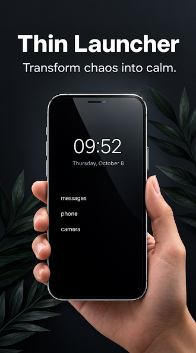

Self-discipline tips usually sound the same: resist the urge, push through, want it more than you want the easy thing. That framing works reasonably well for temptations that show up occasionally — a dessert at a dinner, a sale at a store you walk past once a week. It works much less well for a temptation that's physically present in your pocket for sixteen-plus waking hours a day, every single day, for the rest of your life. You cannot "resist" something indefinitely, forty or fifty times a day, and expect willpower alone to hold.
This isn't a reason to give up on discipline. It's a reason to build discipline differently — around the actual shape of the problem, rather than around a version of discipline built for occasional temptations.
Why willpower alone keeps losing
Willpower behaves like a depletable resource over the course of a day — a well-established general idea in behavioral psychology often discussed under decision fatigue and self-control depletion. Every small act of resistance draws from the same pool. Resisting your phone once at 9am doesn't use up a different reserve than resisting it again at 2pm, and both draw from the same reserve you'll also need for every other disciplined choice that day — what you eat, whether you exercise, how patient you are in a hard conversation.
A phone that's always within reach asks you to make that same withdrawal dozens of times a day, every day, with no end date. Even a very disciplined person loses that fight some meaningful percentage of the time, not because they lack character, but because the math of "finite resource vs. near-infinite repeated demand" doesn't favor willpower, no matter whose willpower it is.
Discipline as environment design, not grit
The more durable version of self-discipline — the version that actually holds up over months and years rather than collapsing after a tough week — tends to rely less on in-the-moment resistance and more on reducing how often resistance is required in the first place. This is sometimes described as environment design: instead of training yourself to say no to a visible temptation, you reduce how visible and how reachable the temptation is, so there are fewer moments where "no" needs to be actively chosen at all.
This isn't a loophole or a lesser form of discipline. Arranging your environment so the disciplined choice is also the easiest choice is itself a disciplined act — you're just doing the hard work once, upfront, instead of repeating it all day. People who look effortlessly disciplined from the outside are very often people who've quietly removed the friction from the hard choice rather than people with some unusual surplus of willpower nobody else has.
The specific problem: your phone is never not there
Most discipline advice implicitly assumes some distance between you and the temptation — it's in another room, it's closed on a shelf, you have to get up and go find it. Your phone breaks that assumption completely. It's already in your hand, your pocket, or face-up on the table next to you, essentially all the time. There's no "not near it" state to retreat to during a normal day.
That changes which discipline strategies actually work. "Just don't bring it with you" isn't realistic advice for most people's lives — a phone is also how you navigate, pay, communicate, and often work. The discipline problem isn't proximity to the device; it's proximity to the specific apps and triggers on that device that pull you in directions you didn't plan on. That's a narrower, much more solvable problem than "never be near your phone."
Reducing friction and temptation, practically
A few environment-design moves tend to matter more than people expect, precisely because they remove repeated decisions rather than adding more willpower demands:
- Turn off non-essential notifications. Every notification is a trigger you didn't choose the timing of. Fewer triggers means fewer moments where discipline is even called on to act.
- Keep your highest-pull apps off your home screen. Distance measured in taps matters. An app that requires a deliberate search is a meaningfully different proposition than one sitting under your thumb the instant you unlock your phone.
- Charge your phone outside arm's reach while you sleep or work. A few extra feet of physical distance, inconvenient as that sounds, removes a surprising number of reflexive check-ins.
- Batch, rather than trickle, your checking. Deciding to check messages at set points during the day — instead of leaving the door open all day — turns a constant low-grade decision into a handful of deliberate ones.
None of these require more discipline in the moment. They all work by reducing how many moments require discipline in the first place, which is the actual lever that holds up over the long run.
Where a hard app-limit fits in

This is the specific idea behind Thin Launcher: a hard limit of 7 apps on your home screen on the free tier, or 11 on Pro (a one-time purchase, not a subscription — there's no subscription anywhere in the app, just one-time purchases for Ad-Free, Pro, and optional tips). It's one environmental-design tool among several, not a complete discipline system on its own, and it's worth being clear about what it isn't: it doesn't track your screen time, and it doesn't block specific apps by schedule. What it does is make the home-screen-friction move from the list above permanent rather than something you have to keep re-deciding. Once an app isn't one of your chosen few, reaching it takes an actual search every time — a small, consistent bit of added friction, applied automatically, all day, without you spending any willpower maintaining it.
That's the whole appeal of environment design over willpower: you spend the discipline once, during setup, and the environment keeps enforcing the outcome long after your in-the-moment willpower would have run out.
Discipline beyond the phone
The same logic generalizes well past phones. Most durable self-discipline, in any area, comes from making the disciplined choice the path of least resistance rather than the path requiring constant effort — keeping junk food out of the house instead of resisting it in the kitchen, laying out running shoes the night before instead of deciding at 6am whether to run. A phone that's always there is just an unusually persistent, unusually well-designed version of the same general problem, which is exactly why it benefits from the same general solution: change what's easiest, rather than trying to out-willpower something that never takes a day off.
If you want the fuller reasoning behind why fewer visible choices on your phone leads to calmer, more intentional use generally, our piece on phone minimalism and a simpler home screen goes further into that philosophy. And if your discipline goal is specifically about building better habits overall rather than just resisting your phone, see self-improvement starts with your home screen.
Spend the discipline once. Let the environment hold the line after that.
Get Thin Launcher on Google Play